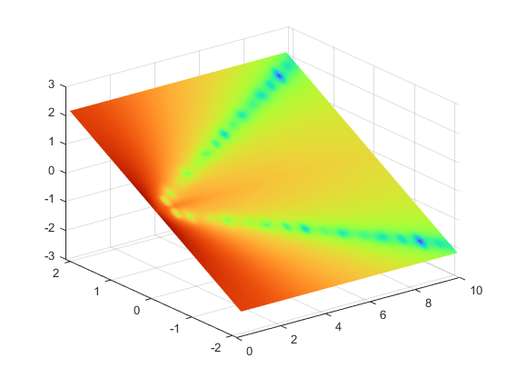
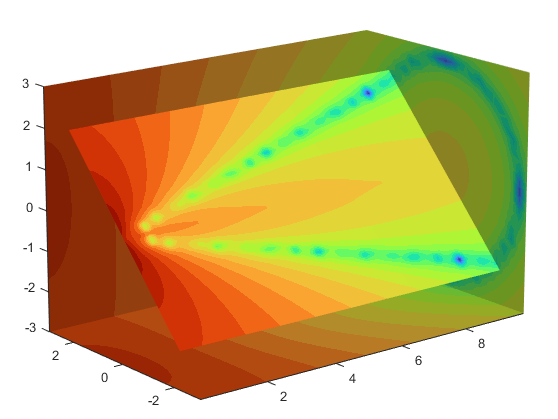
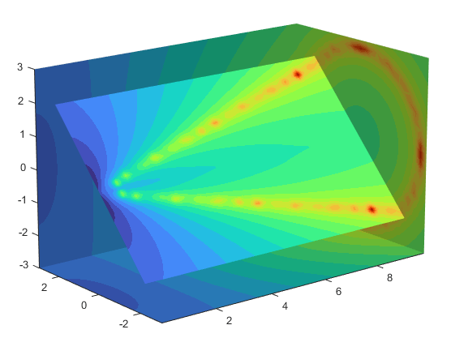
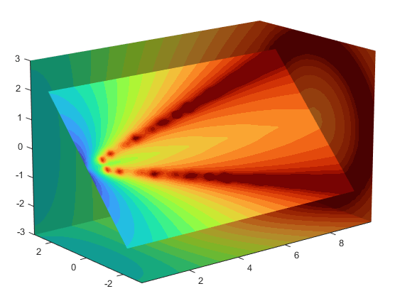
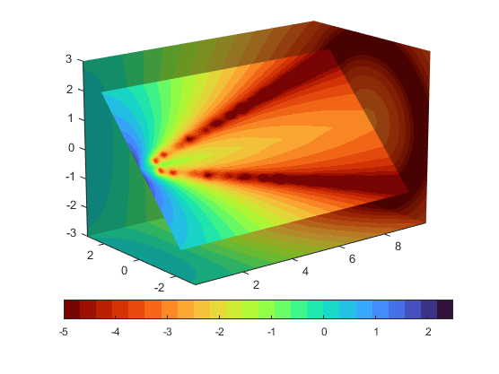

Exploring Volumes with Slice Planes
Slicing Fluid Flow Data
A slice plane (which does not have to be planar) is a surface that takes on
coloring based on the values of the volume data in the region where the slice is
positioned. Slice planes are useful for probing volume data sets to discover where
interesting regions exist, which you can then visualize with other types of graphs
(see the slice example). Slice planes are
also useful for adding a visual context to the bound of the volume when other
graphing methods are also used (see coneplot and Display Streamlines Using Vector Data for
examples).
Use the slice function to create slice
planes. This example slices through a volume generated by
flow.
1. Investigate the Data
Generate the volume data with the command:
[x,y,z,v] = flow;
Determine the range of the volume by finding the minimum and maximum of the coordinate data.
xmin = min(x(:)); ymin = min(y(:)); zmin = min(z(:)); xmax = max(x(:)); ymax = max(y(:)); zmax = max(z(:));
2. Slice Plane at an Angle to the X-Axes
To create a slice plane that does not lie in an axes plane, first define a surface and rotate it to the desired orientation. This example uses a surface that has the same x- and y-coordinates as the volume.
hslice = surf(linspace(xmin,xmax,100),... linspace(ymin,ymax,100),... zeros(100));
Rotate the surface by -45 degrees about the x-axis and
save the surface XData, YData, and ZData to define the slice
plane; then delete the surface.
rotate(hslice,[-1,0,0],-45) xd = get(hslice,'XData'); yd = get(hslice,'YData'); zd = get(hslice,'ZData');
delete(hslice)
3. Draw the Slice Planes
Draw the rotated slice plane, setting the FaceColor to
interp so that it is colored by the figure colormap, and
set the EdgeColor to
none. Increase the DiffuseStrength to .8 to make this plane
shine more brightly after adding a light source.
colormap(turbo) h = slice(x,y,z,v,xd,yd,zd); h.FaceColor = 'interp'; h.EdgeColor = 'none'; h.DiffuseStrength = 0.8;

Set hold to on
and add three more orthogonal slice planes at xmax,
ymax, and zmin to provide a context
for the first plane, which slices through the volume at an angle.
hold on hx = slice(x,y,z,v,xmax,[],[]); hx.FaceColor = 'interp'; hx.EdgeColor = 'none'; hy = slice(x,y,z,v,[],ymax,[]); hy.FaceColor = 'interp'; hy.EdgeColor = 'none'; hz = slice(x,y,z,v,[],[],zmin); hz.FaceColor = 'interp'; hz.EdgeColor = 'none';
4. Define the View
To display the volume in correct proportions, set the data aspect ratio to
[1,1,1] (daspect). Adjust the axis to
fit tightly around the volume (axis). The orientation of the
axes can be selected initially using rotate3d to determine the best
view.
Zooming in on the scene provides a larger view of the volume (camzoom). Selecting a
projection type of perspective gives the rectangular solid
more natural proportions than the default orthographic projection (camproj).
daspect([1,1,1]) axis tight view(-38.5,16) camzoom(1.4) camproj perspective
5. Add Lighting and Specify Colors
Adding a light to the scene makes the boundaries between the four slice planes
more obvious because each plane forms a different angle with the light source
(lightangle). Selecting a
colormap with only 24 colors (the default is 64) creates visible gradations that
help indicate the variation within the volume.
lightangle(-45,45) colormap(turbo(24))

Modify the Color Mapping shows how to modify how the data is mapped to color.
Modify the Color Mapping
The current colormap determines the coloring of the slice planes. This enables you to change the slice plane coloring by:
Changing the colormap
Changing the mapping of data value to color
Suppose, for example, you are interested in data values only between -5 and 2.5
and would like to use a colormap that mapped lower values to reds and higher values
to blues (that is, the opposite of the default turbo
colormap).
1. Customize the Colormap
Flip the colormap using colormap and flipud:
colormap(flipud(turbo(24)))

2. Adjust the Color Limits
Adjust the color limits to emphasize any particular data range of interest. Adjust the color limits to range from -5 to 2.4832 to map any value lower than the value -5 (the original data ranged from -11.5417 to 2.4832) into the same color.
clim([-5,2.4832])

Before R2022a: Adjust the color limits using
caxis, which has the same syntaxes and arguments as
clim.
3. Add a Color Bar
Add a color bar to provide a key for the data-to-color mapping.
colorbar('southoutside')